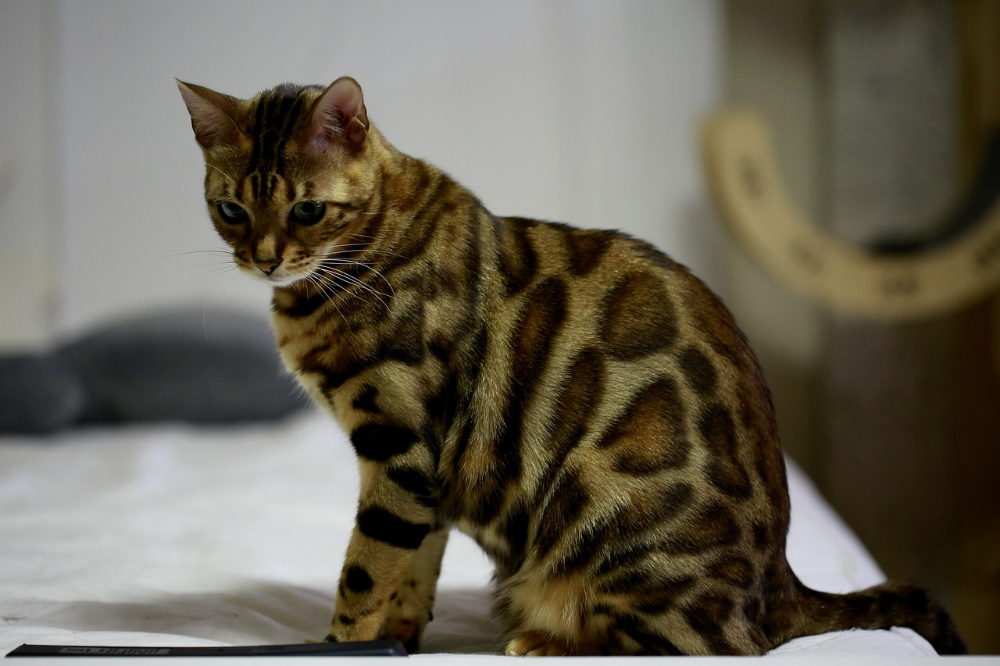
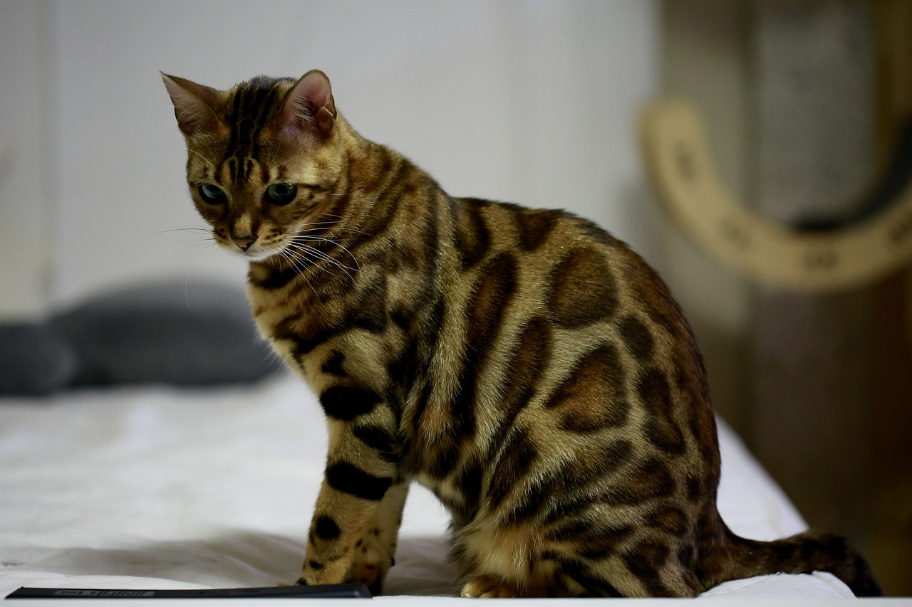
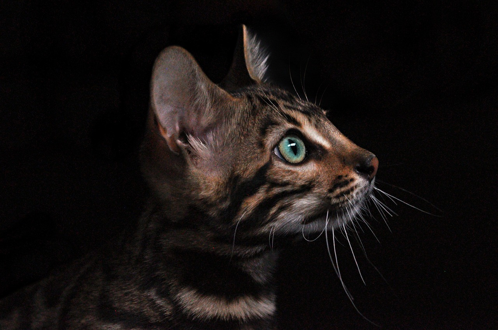
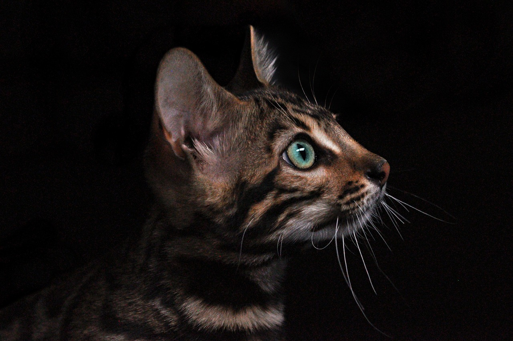

About Bengal Cats
Bengal cats are a vibrant and active breed, known for their striking, wild-like coat patterns that echo those of their leopard ancestors. They are the result of crossbreeding domestic cats with Asian leopard cats, which gives them a larger, more muscular build than the average housecat. Bengals are highly intelligent and curious, often demanding a lot of interaction and stimulation from their owners. Their coats come in various colors and patterns, including rosettes and marbles, with a distinct sheen that makes their fur appear to glitter. This breed is social, playful, and energetic, making them a fascinating addition to any cat-loving household.

 


 
